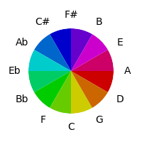
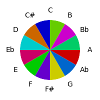
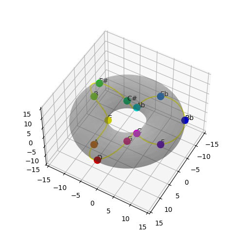
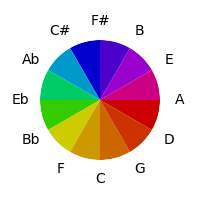
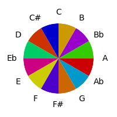
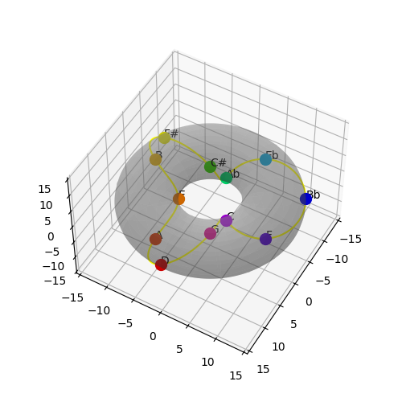
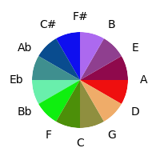
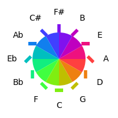
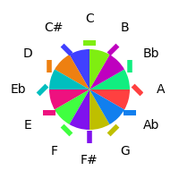
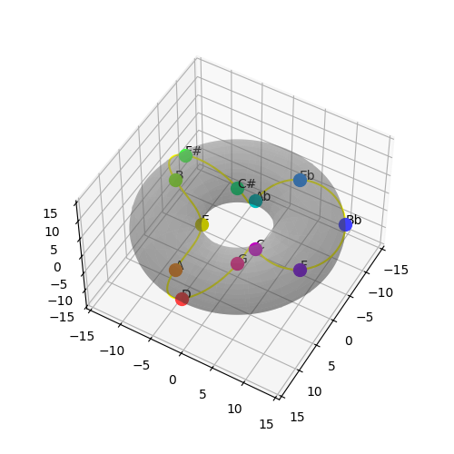

We have so far two spaces for modeling tones (the circle of fifths, and the more complex but satisfying torus space), and we've explored equidistant rainbow colour sets when modelling colors. Let's now look at the correspondence between the spaces.
Starting where we started with color-mapping, let's see how the circle of fifths looks when using a simple hue distribution to represent adjacent tones:
| Fifths Order | Semitone Order | Torus Plot |
|---|---|---|
|  |  |  |
What if we used red, yellow and blue instead of red, green and blue as equidistant colors?
| Fifths Order | Semitone Order | Torus Plot |
|---|---|---|
|  |  |  |
This has some obvious advantages - related tones seem fairly similar etc - along with the logical disadvantage that since the circle of fifths maps major seconds as closer than major thirds, these differences come through in the color space. This is because we are mapping the γ angle in the torus to hue, but doing nothing with the θ angle.
It would be ideal if the color space had an additional circular dimension, but it does not. Trying to use the other dimensions to approximate them is not satisfying - the consistent strength of the colors in the simpler mapping seems to be of more advantage than the variation in shades shown here:

Another possibility is to use something other than color to represent the θ angle in the torus; a simple example is an actual rotation of a line. Combining this rotation with the chosen spread of colours more easily differentiated hues:
| Fifths Order | Semitone Order | Torus Plot |
|---|---|---|
|  |  |  |
© David Fraser 2013